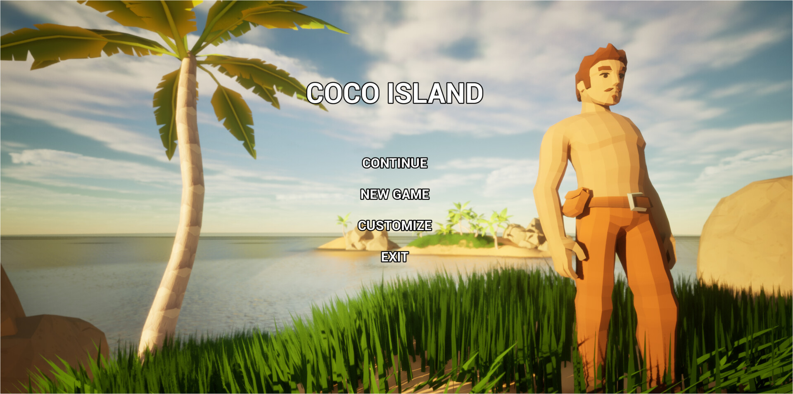
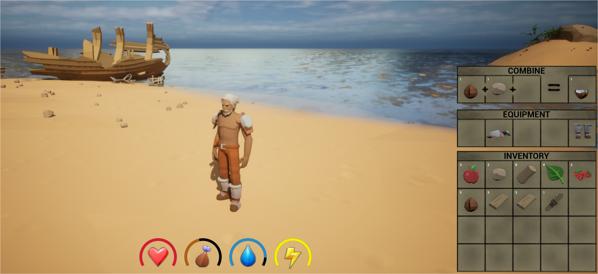
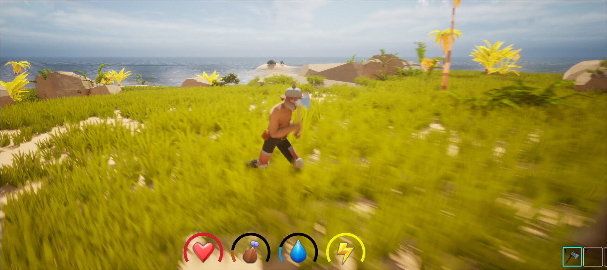

Coco Island
Genre: Cozy Adventure & Building
Platforms: PC
Coco Island is a light survival game where you explore a tropical island after being stranded.
Collect sticks, leaves, and other materials to craft useful items and build a raft that can take you off the island.
The island also holds hidden treasures – including rare armor pieces waiting to be found.
